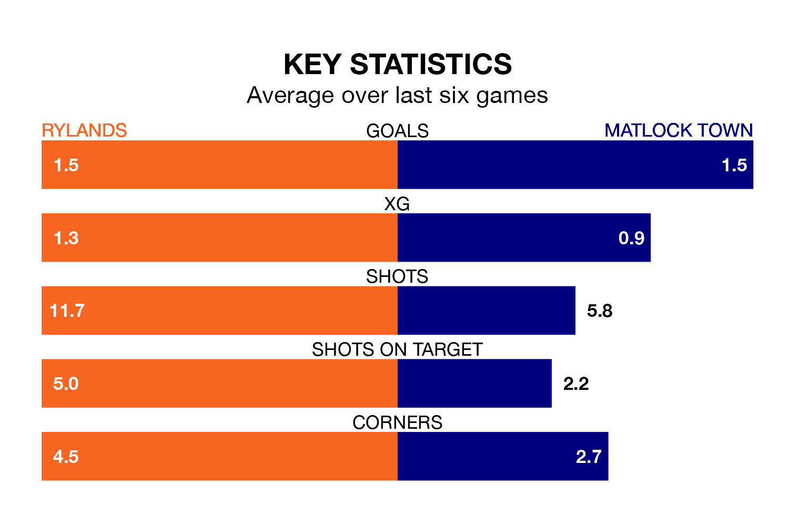

Rylands are heavy favourites to keep all three points at home in Saturday's kick-off against Matlock Town.
Rylands, who sit sixth in the Northern Premier League with 28 games played, are priced at 1.6 to seal victory.
Sitting seven places and 10 points behind them in the table, Matlock are 4.3 to win with *Betting Company*, while the draw is at 4.0.
With 51 goals in 27 games so far this season, Matlock are scoring more than average in the league with 1.9 goals per game. But they are conceding more than average too, letting in 48 goals at a rate of 1.8 per game.
Rylands, meanwhile, are below average scorers, with 1.6 goals per game, compared to a league average of 1.7. They have conceded 1.1 goals per game.
The hosts are in disappointing form in the Northern Premier League, with one win and three draws from their last six games.
With three wins and three losses over that period, Town's form is better – they have taken nine points from 18, compared to Rylands's six.
In the last three years, Rylands and Matlock have played each other on three occasions. Rylands won one of them and Matlock the other.
Their last meeting was on September 23, when Rylands won 4-2 away.
Rylands's last match was on February 3, a 3-2 loss against Bradford Park Avenue.
Matlock lost 1-0 against Lancaster City last time out, also on February 3.
Updated: 11:43 (UTC), 08/02/24